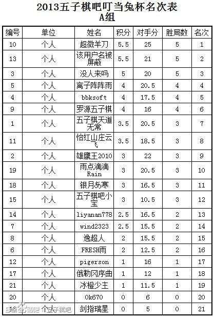
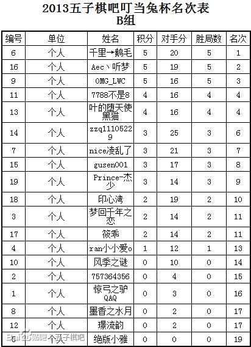
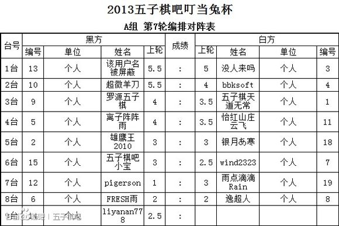
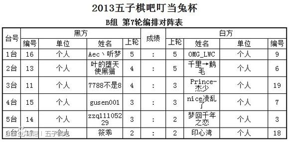

比赛A、B组各录取前三名
冠军奖品是竹制棋盘（价值120元）
亚军是云子棋子或者方寸之间（价值70-80元）
季军是普通棋盘（价值20-40元）
 听梦说：老子终于有芳村之间了
听梦说：老子终于有芳村之间了［ 鱼岛岛主同学于 2013-7-18 19:22:52 时花20金币送鲜花一朵］
［ 鱼岛岛主同学于 2013-7-18 19:22:52 时花20金币送鲜花一朵］
［ 鱼岛岛主同学于 2013-7-18 19:22:52 时花20金币送鲜花一朵］
［ 维尔斯特拉斯同学于 2013-7-18 22:37:50 时花20金币送鲜花一朵］
［ 维尔斯特拉斯同学于 2013-7-18 22:37:50 时花20金币送鲜花一朵］
［ 维尔斯特拉斯同学于 2013-7-18 22:37:50 时花20金币送鲜花一朵］
［ 维尔斯特拉斯同学于 2013-7-18 22:37:50 时花20金币送鲜花一朵］
［ 维尔斯特拉斯同学于 2013-7-18 22:37:50 时花20金币送鲜花一朵］